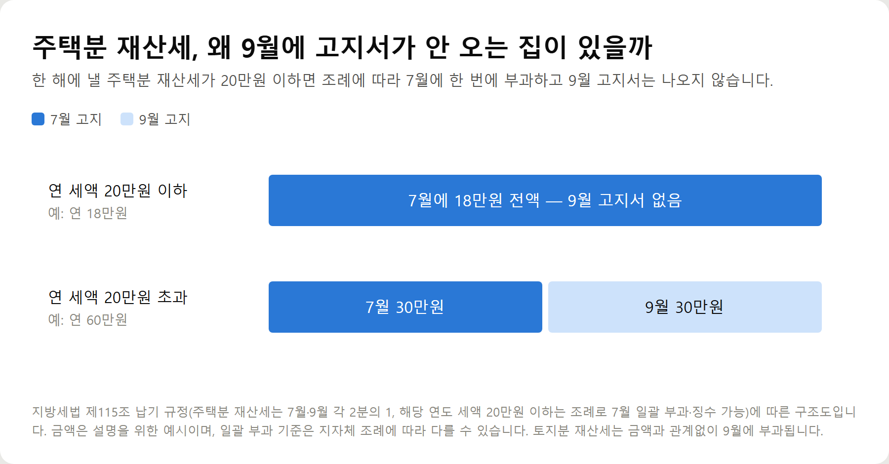
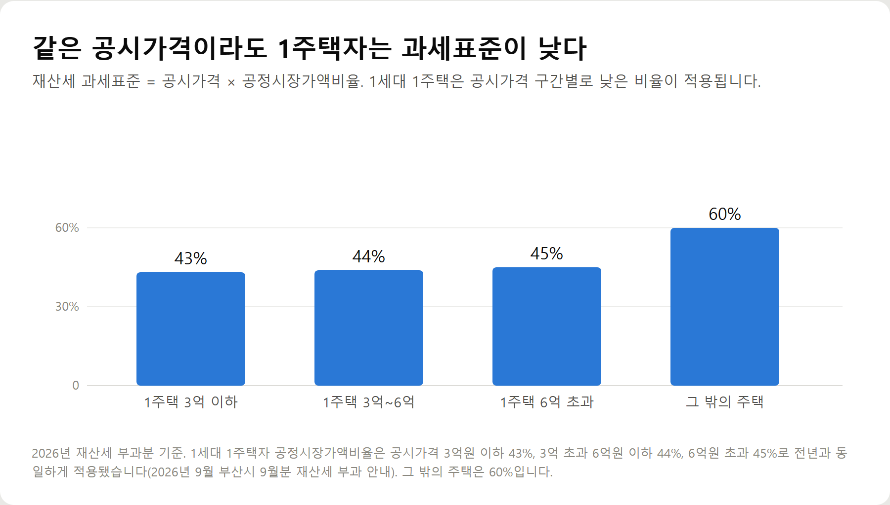
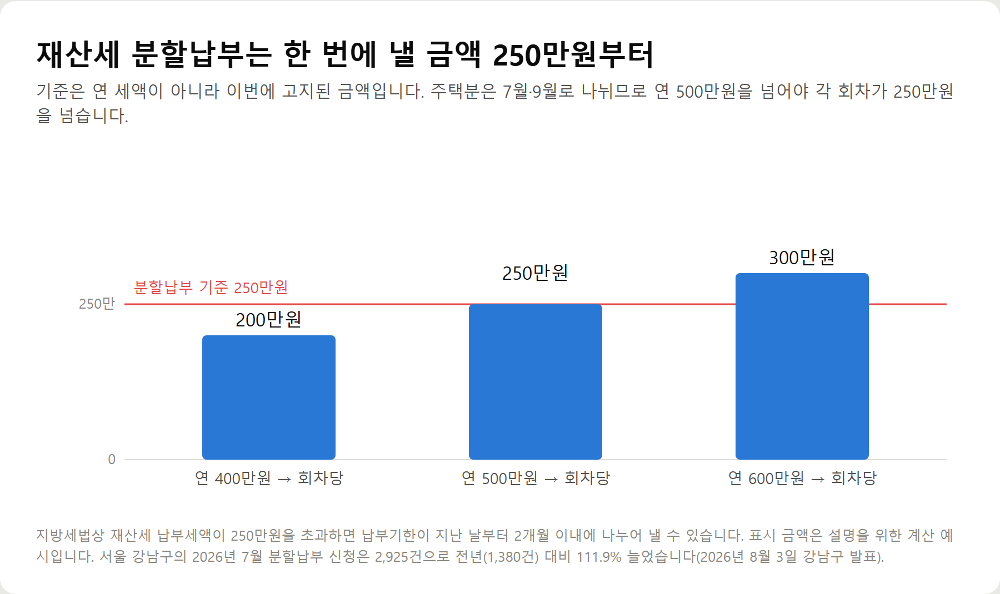
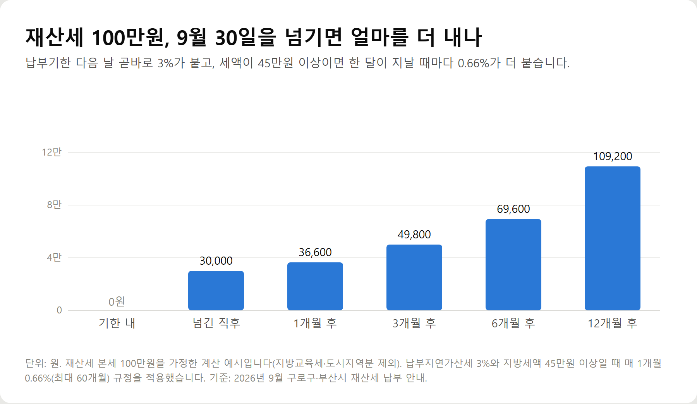

<meta charset="utf-8">
<title>9월 재산세 납부, 30일까지 해야 할 것 — 나의 투자 그리고 행복한 여행</title>
<meta name="description" content="2026년 9월 정기분 재산세 납부기간은 9월 16~30일. 위택스 조회, 카드납부 수수료, 부분 무이자 할부, 분할납부 250만원 기준, 납부지연가산세 3%를 정리했습니다.">
<meta name="viewport" content="width=device-width, initial-scale=1">
<link rel="canonical" href="https://worldtraveler1.tistory.com/75">
<link rel="preconnect" href="https://fonts.googleapis.com">
<link rel="preconnect" href="https://fonts.gstatic.com" crossorigin>
<link rel="stylesheet" href="https://fonts.googleapis.com/css2?family=Hahmlet:wght@400;600;800&family=IBM+Plex+Mono:wght@400;500&family=IBM+Plex+Sans+KR:wght@300;400;500;600&display=swap">

<style>
  :root{
    --paper:#F2EEE6;--surface:#FAF8F3;--surface-2:#E7E1D5;
    --ink:#191510;--ink-2:#4A4235;--ink-3:#7D7364;
    --line:#D6CEBF;--line-soft:#E4DDD0;--accent:#B06A15;--accent-bright:#C2761A;
    --up:#E5484D;--down:#3B82F6;
    --f-display:"Hahmlet",'Nanum Myeongjo',"Apple SD Gothic Neo",serif;
    --f-body:"IBM Plex Sans KR","Apple SD Gothic Neo","Malgun Gothic",sans-serif;
    --f-mono:"IBM Plex Mono","SFMono-Regular",Consolas,monospace;
    --pad:clamp(20px,5vw,64px);
  }
  @media (prefers-color-scheme:dark){
    :root:not([data-theme="light"]){
      --paper:#0B1120;--surface:#121A2C;--surface-2:#1A2439;
      --ink:#E9EEF7;--ink-2:#A9B5C9;--ink-3:#72809A;
      --line:#26314A;--line-soft:#1D2739;--accent:#E8A33D;--accent-bright:#F0B45C;
    }
  }
  *{box-sizing:border-box;}
  body{margin:0;background:var(--paper);color:var(--ink);font-family:var(--f-body);
    font-weight:300;font-size:1rem;line-height:1.75;-webkit-font-smoothing:antialiased;}
  a{color:inherit;}
  img{max-width:100%;height:auto;}
  .wrap{max-width:760px;margin:0 auto;padding-inline:var(--pad);}
  .nav{position:sticky;top:0;z-index:20;background:color-mix(in srgb,var(--paper) 88%,transparent);
    backdrop-filter:saturate(180%) blur(12px);border-bottom:1px solid var(--line);}
  .nav-in{display:flex;align-items:center;justify-content:space-between;height:58px;}
  .brand{font-family:var(--f-display);font-weight:600;font-size:1rem;letter-spacing:-.02em;text-decoration:none;}
  .back{font-family:var(--f-mono);font-size:.72rem;color:var(--ink-3);text-decoration:none;}
  .article{padding-block:clamp(40px,7vw,72px) clamp(56px,9vw,96px);}
  .eyebrow{font-family:var(--f-mono);font-size:.68rem;letter-spacing:.16em;text-transform:uppercase;
    color:var(--accent);margin:0 0 14px;}
  h1{font-family:var(--f-display);font-weight:800;font-size:clamp(1.6rem,4.4vw,2.3rem);
    line-height:1.3;letter-spacing:-.03em;margin:0 0 16px;}
  .byline{font-family:var(--f-mono);font-size:.72rem;color:var(--ink-3);
    padding-bottom:24px;border-bottom:1px solid var(--line);margin-bottom:32px;}
  h2{font-family:var(--f-display);font-weight:600;font-size:1.25rem;letter-spacing:-.02em;margin:42px 0 14px;}
  h3{font-family:var(--f-display);font-weight:600;font-size:1.05rem;letter-spacing:-.02em;
    margin:30px 0 10px;padding-top:14px;border-top:1px solid var(--line-soft);}
  h3 .code{font-family:var(--f-mono);font-size:.7rem;font-weight:400;color:var(--ink-3);margin-left:6px;}
  p{margin:0 0 18px;color:var(--ink-2);}
  ul.checks{margin:0 0 18px;padding-left:20px;color:var(--ink-2);}
  ul.checks li{margin-bottom:8px;font-size:.94rem;}
  table{width:100%;border-collapse:collapse;font-size:.88rem;margin-bottom:8px;}
  th{font-family:var(--f-mono);font-size:.66rem;letter-spacing:.06em;text-transform:uppercase;
    color:var(--ink-3);text-align:right;padding:8px 6px;border-bottom:1px solid var(--line);}
  th:first-child{text-align:left;}
  td{padding:10px 6px;border-bottom:1px solid var(--line-soft);color:var(--ink-2);}
  td.num{font-family:var(--f-mono);text-align:right;font-variant-numeric:tabular-nums;}
  td.up{color:var(--up);} td.down{color:var(--down);}
  .scroll{overflow-x:auto;}
  figure{margin:22px 0;}
  figure img{display:block;border-radius:3px;background:var(--surface-2);}
  figcaption{margin-top:8px;font-family:var(--f-mono);font-size:.68rem;color:var(--ink-3);text-align:center;}
  .note{margin-top:34px;padding:16px 18px;border-left:3px solid var(--accent);
    background:var(--surface);border-radius:0 3px 3px 0;}
  .note p{margin:0;font-size:.85rem;color:var(--ink-3);}
  .foot{border-top:1px solid var(--line);background:var(--surface);padding-block:30px 38px;}
  .foot p{margin:0;font-size:.8rem;color:var(--ink-3);}
</style>

<nav class="nav">
  <div class="wrap nav-in">
    <a class="brand" href="../index.html">나의 투자 그리고 행복한 여행</a>
    <a class="back" href="../index.html#stocks">← 시황으로</a>
  </div>
</nav>

<main class="wrap article">
  <p class="eyebrow">Market</p>
  <h1>2026년 9월 정기분 재산세 납부 정리 — 기한·조회·카드납부·분할납부·가산세</h1>
  <p class="byline">부동산 · 2026-09-16 기준</p>

  <p>한 줄 요약: 2026년 9월 정기분 재산세 납부기간은 9월 16일부터 30일까지입니다. 지방세라 카드 수수료는 없고, 기한을 넘기면 3%가 붙습니다(재산세 100만원이면 3만원).</p>
  <p>과세기준일 6월 1일 기준 소유자에게 토지분 전액과 주택분 2기분이 부과됩니다. 조회·납부 경로, 카드 혜택 확인 순서, 분할납부 기준(회차당 250만원 초과), 납부지연가산세 계산을 함께 기록했습니다.</p>
  <h2>핵심만 먼저</h2>
  <ul class="checks">
    <li>납부기간 — 2026년 9월 16일부터 9월 30일까지입니다. 30일이 마지막 날입니다</li>
    <li>누가 내나 — 2026년 6월 1일 기준으로 주택이나 토지를 갖고 있던 사람입니다</li>
    <li>무엇이 나오나 — 토지분 재산세 전액과, 주택분 재산세의 나머지 절반입니다</li>
    <li>카드 수수료 — 없습니다. 지방세는 국세와 달리 납부대행 수수료를 납세자가 부담하지 않습니다</li>
    <li>늦으면 — 3%가 곧바로 붙습니다. 재산세 100만원이면 3만원입니다</li>
  </ul>
  <h2>1. 이번 9월에 나온 재산세는 어떤 세금인가</h2>
  <p>재산세는 매년 6월 1일을 기준으로 그날 소유자에게 1년 치가 부과됩니다. 6월 2일에 집을 팔았더라도 올해 재산세는 판 사람이 전부 냅니다. 반대로 5월 31일에 잔금을 치르고 샀다면 산 사람이 냅니다.</p>
  <p>9월에 나오는 고지서에는 두 가지가 들어 있습니다.</p>
  <ul class="checks">
    <li>토지분 재산세 — 대지, 전·답·과수원, 잡종지 같은 토지에 대한 세금입니다. 금액과 관계없이 9월에 부과됩니다</li>
    <li>주택분 재산세 2기분 — 집에 대한 세금의 나머지 절반입니다. 7월에 이미 절반을 냈습니다</li>
  </ul>
  <p>규모는 작지 않습니다. 부산시는 이번 9월분으로 183만 건, 7,144억 원을 부과했다고 9월 15일 밝혔습니다. 지난해보다 196억 원, 2.8% 늘어난 금액입니다. 개별주택 공시가격이 1.94%, 개별공시지가가 1.99% 오른 것이 영향을 줬습니다.</p>
  <h2>2. 9월에 재산세 고지서가 안 왔다면</h2>
  <p>고지서가 안 온 이유는 크게 네 가지입니다. 앞의 두 가지는 정상이고, 뒤의 두 가지는 확인이 필요합니다.</p>
  <figure><figcaption>주택분 재산세 연 세액에 따른 7월·9월 부과 구조 (설명용 예시)</figcaption></figure>
  <ul class="checks">
    <li>① 주택분 세액이 20만원 이하 — 지방세법은 한 해에 부과할 주택분 재산세가 20만원 이하이면 조례로 정해 7월에 한 번에 부과할 수 있게 하고 있습니다. 7월에 다 냈으니 9월 고지서가 없는 것이 맞습니다</li>
    <li>② 토지가 없다 — 주택만 갖고 있고 주택분 세액이 20만원 이하라면 9월에 낼 것이 없습니다</li>
    <li>③ 전자송달을 신청했다 — 종이 고지서 대신 이메일이나 앱으로 갑니다. 세금은 그대로 남아 있습니다</li>
    <li>④ 주소가 바뀌었다 — 고지서가 예전 주소로 갔을 수 있습니다. 이 경우에도 납부 의무와 기한은 그대로입니다</li>
  </ul>
  <p>③과 ④는 고지서를 못 봤다고 해서 기한이 미뤄지지 않습니다. 9월 30일이 지나면 가산세가 붙습니다. 안 왔다면 종이를 기다리지 말고 직접 조회하는 편이 확실합니다.</p>
  <h2>3. 재산세 조회하고 납부하는 곳</h2>
  <p>전국 어디서나 쓰는 곳은 위택스입니다. 서울에 집이나 땅이 있다면 서울시 전용 시스템이 따로 있습니다.</p>
  <ul class="checks">
    <li>위택스 — 전국 지방세 조회·납부. 모바일은 스마트 위택스입니다</li>
    <li>서울시 이택스(ETAX)와 STAX 앱 — 서울 소재 재산에 대한 조회·납부</li>
    <li>인터넷지로, 인터넷뱅킹, 은행 창구</li>
    <li>납부 전용 가상계좌, ARS 전화, 은행 ATM·공과금수납기</li>
    <li>카카오페이 등 간편결제 앱의 청구서·세금 메뉴</li>
  </ul>
  <p>공인인증서 없이도 전자납부번호만 있으면 낼 수 있는 경로가 많습니다. 고지서를 잃어버렸다면 위택스에서 본인 인증 후 고지 내역을 확인하고 그대로 납부하면 됩니다.</p>
  <p>자잘하지만 챙길 수 있는 할인도 있습니다. 서울 구로구의 경우 전자송달이나 자동납부를 신청하면 고지서 한 장당 800원, 둘 다 신청하면 1,600원을 세액공제해 줍니다. 금액과 운영 방식은 지자체마다 다르므로 관할 구청 고지서나 홈페이지에서 확인하세요.</p>
  <h2>4. 같은 값의 집인데 재산세가 다른 이유</h2>
  <p>재산세는 공시가격 전체에 세율을 곱하지 않습니다. 공시가격에 공정시장가액비율을 곱해 과세표준을 만든 다음, 거기에 세율을 적용합니다.</p>
  <figure><figcaption>2026년 재산세 공정시장가액비율 — 1세대 1주택과 그 밖의 주택 (단위: %)</figcaption></figure>
  <p>1세대 1주택자는 공시가격 3억원 이하 43%, 3억 초과 6억원 이하 44%, 6억원 초과 45%가 적용됩니다. 그 밖의 주택은 60%입니다. 같은 공시가격이라도 1주택자의 과세표준이 낮아지는 구조입니다.</p>
  <p>여기에 고지서에는 재산세 본세만 찍히지 않습니다. 도시지역분과 지방교육세가 함께 붙어 실제 청구액이 본세보다 커집니다. 계산 구조는 따로 정리해 둔 글이 있으니 금액이 어떻게 나왔는지 궁금하다면 그쪽을 보시면 됩니다.</p>
  <h2>5. 재산세 카드납부, 수수료는 정말 없나</h2>
  <p>없습니다. 재산세는 지방세이고, 지방세를 신용카드나 체크카드로 결제할 때는 납세자가 부담하는 납부대행 수수료가 없습니다.</p>
  <p>국세는 다릅니다. 종합소득세나 양도소득세를 카드로 낼 때는 수수료가 붙습니다. 이 차이 때문에 "세금은 카드로 내면 손해"라는 말이 재산세에는 해당하지 않습니다.</p>
  <p>그렇다면 남는 것은 카드 혜택입니다. 순서는 이렇습니다.</p>
  <ul class="checks">
    <li>① 이미 가진 카드의 지방세 혜택부터 확인 — 카드사 앱의 '세금 납부' 또는 '지방세' 메뉴에 그달 이벤트가 올라옵니다</li>
    <li>② 전월 실적 조건을 본다 — 예를 들어 KB국민 직장인보너스체크카드는 국세·지방세를 건당 10만원 이상 결제하면 7,000원을 환급하는데, 전월 이용실적 30만원 이상과 월 1회 한도가 붙습니다</li>
    <li>③ 통합 할인 한도를 본다 — 다른 데서 이미 할인을 많이 받았으면 세금 납부분은 한도에 걸려 제외될 수 있습니다</li>
    <li>④ 새 카드를 만들지 않는다 — 재산세 한 번 내려고 카드를 새로 발급하면 연회비와 실적 관리 부담이 남습니다</li>
  </ul>
  <h2>6. 부분 무이자 할부는 무이자가 아닙니다</h2>
  <p>목돈이 부담스러우면 할부를 찾게 됩니다. 이때 가장 많이 걸리는 것이 '부분 무이자'라는 표현입니다.</p>
  <p>하나카드가 이달 말까지 제공하는 국세·지방세 부분 무이자 할부를 예로 들면 이렇습니다. 6개월 할부는 1~3회차 수수료를 본인이 내고 4~6회차가 면제됩니다. 10개월은 1~4회차를 내고 5~10회차 면제, 12개월은 1~5회차를 내고 나머지가 면제됩니다. 하나BC카드는 대상에서 빠집니다.</p>
  <p>즉 할부 기간 전체가 공짜인 상품이 아니라, 뒤쪽 회차만 면제해 주는 상품입니다. 기간을 길게 잡을수록 본인이 부담하는 회차 수도 늘어납니다.</p>
  <p>여기에 두 가지가 더 붙습니다.</p>
  <ul class="checks">
    <li>일시불로 먼저 결제한 뒤 할부로 바꾸면 행사 대상에서 빠질 수 있습니다. 결제 단계에서 할부 개월을 골라야 합니다</li>
    <li>무이자·부분 무이자로 결제한 금액은 포인트·마일리지 적립과 전월 실적에서 빠지는 경우가 많습니다. 하나카드는 무이자 할부 이용 시 포인트와 마일리지를 적립하지 않는다고 안내합니다</li>
  </ul>
  <p>정리하면, 당장 한 번에 낼 여력이 있다면 일시불이 낫습니다. 할부는 '이자를 아끼는 수단'이 아니라 '현금 흐름을 나누는 수단'으로 보는 편이 정확합니다.</p>
  <h2>7. 분할납부와 납부유예 — 기준은 연 세액이 아니다</h2>
  <p>세액이 크면 나눠 낼 수 있습니다. 재산세 납부세액이 250만원을 초과하면 납부기한이 지난 날부터 2개월 이내에 나누어 낼 수 있습니다.</p>
  <figure><figcaption>연 세액별 회차당 재산세와 분할납부 기준선 250만원 (설명용 계산 예시)</figcaption></figure>
  <p>여기서 많이 헷갈리는 지점이 있습니다. 기준은 1년치 세액이 아니라 이번에 고지된 금액입니다. 주택분은 7월과 9월로 절반씩 나뉘기 때문에, 연 세액이 500만원을 넘어야 각 회차가 250만원을 넘어 분할납부 대상이 됩니다. 연 400만원이면 회차당 200만원이라 해당되지 않습니다.</p>
  <p>신청은 늘고 있습니다. 서울 강남구는 올해 7월 분할납부 신청이 2,925건으로 지난해 같은 기간 1,380건보다 111.9% 늘었다고 8월 3일 밝혔습니다. 신청 금액도 98억 원으로 지난해 79억 원에서 늘었습니다. 올해 공동주택가격이 25.8% 오르면서 주택분 재산세가 평균 16.3% 상승한 영향입니다.</p>
  <p>납부유예도 있습니다. 주택을 팔거나 증여·상속할 때까지 세 부담을 미뤄 주는 제도로, 강남구에서는 올해 44건이 접수돼 전년보다 69% 늘었습니다. 조건과 심사 기준이 따로 있으니 관할 구청 세무부서에 확인해야 합니다.</p>
  <h2>8. 9월 30일을 넘기면 얼마를 더 내나</h2>
  <p>가장 확실한 절약은 기한을 지키는 것입니다. 기한을 하루라도 넘기면 미납 세액의 3%가 납부지연가산세로 붙습니다.</p>
  <figure><figcaption>재산세 100만원을 기한 내 못 냈을 때 경과 기간별 추가 부담 (단위: 원, 계산 예시)</figcaption></figure>
  <p>여기서 끝이 아닙니다. 지방세액이 45만원 이상이면 납부기한이 지난 날부터 1개월이 지날 때마다 그 세액의 0.66%가 추가로 붙습니다. 최대 60개월까지입니다.</p>
  <p>재산세 100만원을 기준으로 보면 넘긴 직후 3만원, 3개월 뒤 49,800원, 1년 뒤에는 109,200원이 됩니다. 카드 혜택으로 아끼는 몇 천 원과는 자릿수가 다릅니다.</p>
  <h2>9. 내기 전에 확인할 것</h2>
  <ul class="checks">
    <li>고지서의 과세 대상이 내 재산이 맞는지 — 이미 판 부동산이 들어 있지 않은지 봅니다(6월 1일 기준이라 팔았어도 나올 수 있습니다)</li>
    <li>1세대 1주택 공정시장가액비율이 적용됐는지 — 세대원 전체 기준이라 본인 판단과 다를 수 있습니다</li>
    <li>여러 건이 나왔다면 합산 금액 — 주택과 토지가 따로 고지되면 각각 기한이 같습니다</li>
    <li>카드 결제 전 지방세 적용 여부와 제외 카드</li>
    <li>자동이체·전자송달 신청 여부 — 다음 회차부터 세액공제를 받습니다</li>
  </ul>
  <h2>자주 묻는 질문</h2>
  <p>Q. 9월 재산세 납부기간은 언제까지인가요?</p>
  <p>2026년 9월 16일부터 9월 30일까지입니다. 30일이 지나면 곧바로 3%의 납부지연가산세가 붙습니다.</p>
  <p>Q. 9월에 고지서가 안 왔는데 안 내도 되나요?</p>
  <p>한 해 주택분 재산세가 20만원 이하라 7월에 전액 부과된 경우라면 낼 것이 없습니다. 그 외에는 전자송달 신청이나 주소 변경 때문에 종이 고지서만 안 왔을 수 있으므로 위택스에서 직접 조회해 확인해야 합니다.</p>
  <p>Q. 재산세를 카드로 내면 수수료가 붙나요?</p>
  <p>붙지 않습니다. 지방세는 납세자가 부담하는 납부대행 수수료가 없습니다. 국세를 카드로 낼 때와 다른 점입니다.</p>
  <p>Q. 분할납부는 얼마부터 신청할 수 있나요?</p>
  <p>이번에 고지된 납부세액이 250만원을 초과할 때입니다. 주택분은 7월·9월로 나뉘므로 연 세액 기준으로는 500만원을 넘어야 각 회차가 250만원을 넘습니다.</p>
  <p>Q. 전자송달과 자동납부를 신청하면 얼마나 깎이나요?</p>
  <p>서울 구로구 기준으로 둘 중 하나를 신청하면 고지서 한 장당 800원, 둘 다 신청하면 1,600원을 공제해 줍니다. 금액은 지자체마다 다를 수 있습니다.</p>
  <h2>정리하면</h2>
  <p>9월 재산세는 6월 1일 소유자에게 나오는 세금이고, 기한은 9월 30일입니다. 카드로 내도 수수료가 없으니 가진 카드의 지방세 혜택부터 확인하고, 부분 무이자는 초반 회차 수수료를 본인이 낸다는 점만 기억하면 됩니다.</p>
  <p>세액이 커서 부담된다면 회차당 250만원 초과일 때 분할납부가 가능합니다. 무엇보다 30일을 넘기지 않는 것이 가장 큰 절약입니다.</p>
  <p>다음 글에서는 위택스 재산세 미리보기로 내년 세금을 미리 확인하는 방법을 정리하겠습니다.</p>
  <p><b>함께 보면 좋은 글</b> — <a href="https://danielmoon82.github.io/moon/posts/holdingtax-2026-09-14.html">재산세와 종부세 차이, 공시가격별 보유세 계산하기</a></p>
  <div class="note"><p>이 글은 지방세법과 공개 보도·지자체 안내를 바탕으로 한 일반 정보이며 개별 세무 상담을 대신하지 않습니다. 카드사 혜택은 시기와 카드 상품에 따라 달라지므로 결제 전 해당 카드사 안내를 확인하세요. 실제 세액과 납부 조건은 위택스와 관할 지자체 고지 내역이 기준입니다.</p></div>
  <p>※ 기준 시점: 2026년 9월 정기분 재산세. 납부기간·가산세·세액공제는 2026년 9월 구로구·부산시 납부 안내, 분할납부 신청 통계는 2026년 8월 3일 강남구 발표, 카드 혜택 조건은 2026년 9월 5일 한국경제 보도 기준입니다. 주택분 일괄 부과 기준 20만원은 지방세법 제115조에 따른 것으로, 실제 운영은 지자체 조례에 따라 다를 수 있습니다.</p>
</main>

<footer class="foot">
  <div class="wrap"><p>나의 투자 그리고 행복한 여행 · 투자 판단의 참고 자료일 뿐, 매수·매도를 권유하지 않습니다.</p></div>
</footer>
